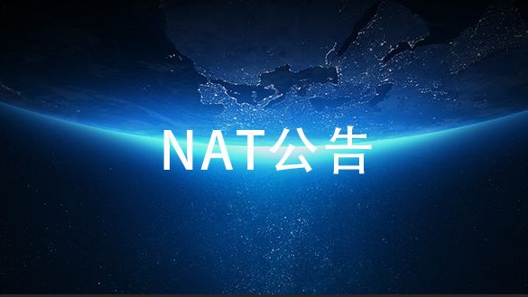

最新公告
活动公告
政策公告
其他公告

NAT基金会公告002号
NAT FOUNDATION PTE.LTD. （简称 NAT 基金会），于 2019 年 12月 10 日与 ZG.COM 签订上链协议，本基金发出的数字资产通证 NAT 预计于 2020 年 1 月 10 日左右正式登陆 ZG.COM 参与国际交易。特此公告，敬请期待！！12/11 2019
NAT基金会公告001号
NAT FOUNDATION PTE.LTD. (以下简称NAT基金会)，于2019年11月11日新加坡正式注册成立，经股东-致决定将在区块链平台发行数字通证Nature Token (以下简称NAT)发行总数量为6, 193,690,081 枚。NAT基金会,是为促进、指导、支持全球幸福产业发展而设立的全球性基金公司,其核心使命是致力于通过应用区块链技术,将实体资产数字通证化。目11/28 2019

中国最近公布的区块链政策为什么具有重大的意义
11月28日报道 美媒称，上个月，中国领导人鼓励企业抓住契机，使用并加快区块链技术的发展。从中国对待这一技术的角度来看，这是一个重大事件。目前多家中国技术公司的股价上涨，在微信上搜索“区块链”一词的数量大幅增长，这都让市场大吃一惊。这一机会为社交媒体巨头微信和支付平台支付宝等大型本土企业的自由创新开了绿灯，并赋予了它们巨大的权力。11/28 2019
Nature Token关于通过资产数字化充分应用分布式网络空间打造幸福产业经济体的白皮书
在本白皮书中，我们提出一个由区块链应用技术、数字资产和大数据分析综合驱动的幸福产业经济系统，基于应用实体企业可增长、可交易的资产营运情况，分析其可行性可持续发展的前景。通过均衡兼顾公平分配和激励效果Staking激励方案，与单轨三通证+愿力挖矿的激励形式以及数字资产未来增值红利等方式，分别激励产业上下游的参与者和行业潜在的用户，从而形成一个国际国内政府支持发展，人民大众持续意愿参与的生态经济体。11/15 2019
《区块链信息服务管理规定》
第一条 为了规范区块链信息服务活动，维护国家安全和公共利益，保护公民、法人和其他组织的合法权益，促进区块链技术及相关服务的健康有序发展，根据《中华人民共和国网络安全法》《互联网信息服务管理办法》和《国务院关于授权国家互联网信息办公室负责互联网信息内容管理工作的通知》，制定本规定。01/10 2019
国家互联网信息办公室发布《区块链信息服务管理规定》
国家互联网信息办公室2019年1月10日发布《区块链信息服务管理规定》（以下简称“《规定》”），自2019年2月15日起施行。国家互联网信息办公室有关负责人表示，出台《规定》旨在明确区块链信息服务提供者的信息安全管理责任，规范和促进区块链技术及相关服务健康发展，规避区块链信息服务安全风险，为区块链信息服务的提供、使用、管理等提供有效的法律依据。01/10 2019
暂无公告
暂无公告